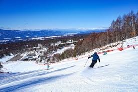

基本情報
場所ここに場所
レベル感初級 / 中級 / 上級 など
雪質パウダー / 圧雪 / 春雪 など
混雑空いている / 普通 / 混む など
コース印象緩斜面 / 中斜面 / 急斜面 など
リフト本数や使いやすさ
おすすめ季節真冬 / 春スキー など
ひとことここに短いメモ
概要
ここにスキー場の概要を書きます。雪質、コースの雰囲気、景色、アクセスの印象などをまとめるとわかりやすいです。
このページでは、自分が訪れたときの写真や感想を中心にまとめ、公式情報や積雪情報などは外部リンクから見られるようにします。
感想メモ
ここに自分の感想を書きます。滑りやすさ、混雑、景色、食事、また行きたいかどうかなどを書けば十分です。
メイン写真
ここに写真の説明を書きます。
写真ギャラリー

ゲレンデ、景色、食事などの写真を追加できます。
現地で撮影した写真をInstagramにも載せています。
外部リンク
公式情報や積雪情報、地図などは外部リンクから見られるようにしています。
今後追加予定
- 訪問日メモ
- 滑走メモ
- 食事メモ
- 季節別の写真追加